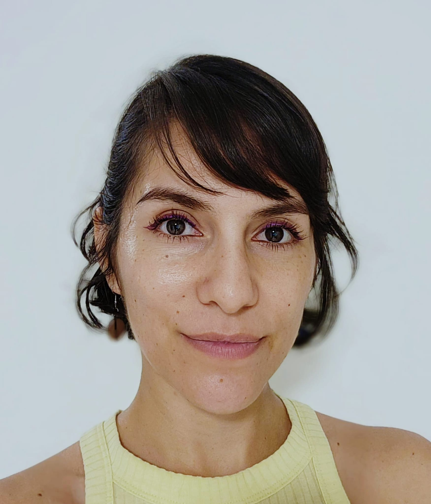

My Resume
Aixa Hernández López

BA in Modern Languages
Experienced teacher of English as a foreign language in all levels and to all ages.
Education
- Bachelor of Arts in Modern Languages
University of Quindío
Colombia
2012
- Teaching in a University diploma
University of Quindío
2015
Work Experience
- Academic Coordinator
Kids&Us Mirasierra
Oct 2022 - Mar 2024
- EFL Teacher
Kids&Us Barajas
Nov 2019 - July 2022
Other skills
- Web development in HTML
- Basis Italian and French
- Design and Marketing
Other
Hobbies
Contact Me